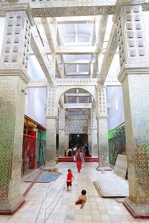
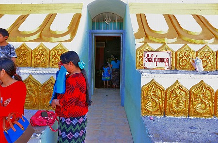
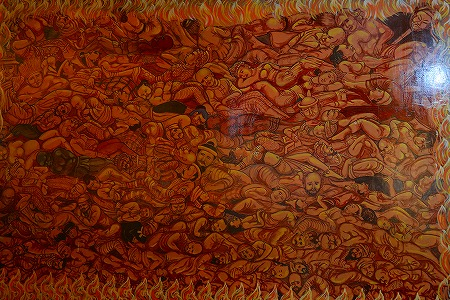
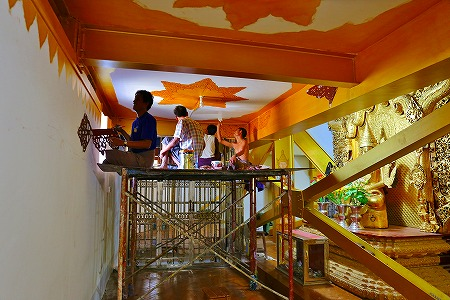

ミャンマーでの珍寺パトロール、お次は
ボーディタタウンである。
以前訪れた際には、巨大な寝釈迦があったのだが、それに加えて世界最高クラスの大仏が出来たというのだ。
この世界最大の大仏を見にモンユアまでやってきたのだ。
いわば今回のミャンマー訪問のハイライトである
オート三輪や馬車が行き交う道の向こうに大仏さんが姿を現した。
おおお、デカい！
手前には巨大な寝釈迦が横たわっている。
なんだこの素敵すぎるツープラトン。
まるで冗談のような…もとい夢のような光景だ。
大仏に近づきたい、というはやる気持ちを抑えつつ周辺もチェック。
大量に仏陀像が並んでいるエリア。
一体一体笠がつけられている辺り、人々の仏様に対する気持ちが感じられますね。
大仏の前に建つ大きなパゴダに登ってみる。
階段を上っていくと、パゴダの中にパゴダがある入れ子構造になっていた。
豪華なパゴダだったが、一番印象的だったのは外のテラスからの眺め。
むひょー。絶景ナリ。
丘の上に大仏と寝釈迦がおわす。
↑寝釈迦様の顔の下に小さい大仏があるでしょ（「小さい大仏」って日本語変か）。
その小さい大仏ですら
鎌倉大仏よりはるかにデカいすから。
もう、あまりにも壮大でスケール感がトランス状態。
大仏の左手にも何やら大仏を作っているようだ。
これもまた規模としては相当大きそうだぞ…。
…というわけで、大仏さんがおわすエリアに向かう。
山の麓から大仏さん&寝釈迦さんのいる丘の上までの参道には屋根が架かっており、土産物屋がずらりと並んでいる。
あ、勿論ここも裸足ですからね。
炎天下なので屋根が架かっているだけでもありがたい。
ついつい中国製の安いオモチャを買ってしまった。バナナを持ったサルが絶叫しながら走り回るヤツ。
で、寝釈迦さんである。
長さ111ｍの
シュエターリャウン仏。
寝釈迦の前のスペースがあまり広くなく、引きがないので全体像が撮りにくい。
皆さん一心に拝んでます。
寝釈迦の後ろには土産屋が並んでいる。
胎内に入ってみる。
2000年に訪れた時は工事中だったが、15年経ってもまだ工事中でしたよ。
恐らく寝釈迦の内装そっちのけで大仏の方の工事に注力しちゃったんでしょう。
ミャンマーの大仏って
日本では考えられないような工程で造られる事がある。
普通大仏を造る場合、骨組みを作って下から順に仕上げていきますよね？
ところがミャンマーの場合、構造体のフレームが出来たら次にいきなり顔だけ造っちゃったりするのだ。
そして顔だけペイントして仕上げたりするものだから、フレームに顔だけの大仏が出現するのだ。
まあ、一番大事な顔からつくるっしょ！的な気持ちは判らないでもないが、シュールすぎるぞ。

工事をしている作業員の家族も一緒に寺院内に住んでいるので、子供とかも寝釈迦の中で勝手に遊んでいる。
フルチンの赤ちゃんが鉄筋の上とかハイハイしてたけど大丈夫なのかなあ。
家族で参拝に来た人達はあちこちで記念写真を撮っている。
もちろん撮影はスマホ。以前はカメラさえ持ってる人がいなかったのに、世の中変わったねえ。
外に出て尊顔を見る。ビルマ仏の特徴はこの長いまつ毛。エクステか、っつー位長い。
ちなみにまつ毛は10㎜径程の鉄筋をカールしてあります。
枕は４階建て。
後ろ側は案外雑多な扱いである。
で、いよいよ新しく出来た大仏さんとご対面である。
大仏さんの名は
レーチョン・サチャー・ムニ。
高さは129ｍ。2008年生まれである。
像高としては目下世界最大の大仏である。
ここで大仏にウルサい方々は「おいおい、世界最大の大仏は中国の魯山大仏でしょ」とツッコミを入れるかもしれない。
確かに魯山大仏は総高さとしては153ｍとぶっちぎりの世界一なのだが、その内訳は台座の建物が25ｍ、足元の蓮華座が20ｍなのだ。
つまり純粋な像高としては108ｍ。
一方、こちらのレーチョン・サチャー・ムニは総高さ129ｍで
像高は115.8ｍ。
というわけで仏像としては世界最大の高さなのだ。
牛久大仏よりもデカい大仏さんがミャンマーのド田舎の郊外にあるというのが本当に不思議でならない。
物流もそんなに便利な場所でもなかろうに、よくこんな僻地にこれだけ巨大な大仏を建立したのう。感動ぜよ。
大仏さんの裏側。
ロケットの発射台のようなモノが背中についているが、これはエレベーター。
何だかこのまま宇宙に飛んでいきそうな感じだ。
裾の下はがっつしフレームで補強してある辺りはご愛嬌か。

お、入り口じゃん。
中に入ってみますよ、と。
中には仏像が安置されている。
照明が妙にケバいのが気になったが、それ以外は至って普通のお寺っぽい雰囲気だった。
各フロアの案内図。
ビルマ語なので内容は判らないが、とりあえず頭の直下辺りまでは行けるようだ。
やっぱり
大仏は上まで登れてナンボだよねー。
中に入れない大仏なんてさあ、ただのデカい彫像じゃん。
大仏において一番痺れるのは彫刻と建築の狭間を行ったり来たりすること。
それこそが大仏遊びの最高の醍醐味なのですよ。
フロアの片隅に世界の有名な仏像10選の写真があった。
1位中国の楽山大仏、2位タイのエメラルド仏、3位鎌倉大仏、4位タイのワットポーの寝釈迦、5位牛久大仏、
6位スリランカのガルヴィハーラ、7位アユタヤの頭仏、そして8位がここモンユアの大仏、9位香港の天壇大仏、10位インドのフセインサガールの大仏。
で、いよいよ大仏様の胎内へと登って行く。
胎内の各階はこんな感じ。
中央の芯柱の四方に仏像が安置されており、その周りをＸ型の鉄骨の筋交いが囲っている。
フロアの大部分が筋交いに占拠されており、若干窮屈な印象もある。
しかし構造的にホントにコレで大丈夫なのか？と思うほど華奢な構造だった。
面白かったのが、各フロアに描かれていた壁画。

地獄や極楽などの様子が描かれているのだが、大半が字を使わずイラストで説明してあるのだ。
これならビルマ語の全く読めない我々のような外国人でも見て判るので助かった。
↑僧侶を愚弄すると…
↑僧侶に暴力をふるうと…
↑女性をかどわかすと…
↑老人をボコると…
…といった因果応報譚が続く。
↑これは何でしょう。人間界の世知辛さ的な？
海の図。コレかわいかったです。
蛇人間。
ちょっと漫☆画太郎はいってます。
で、地獄。
天から落ちて槍に突き刺さる、の図。
ローラーに轢かれる地獄。
火焔地獄。
何だろう、ここだけアメコミっぽい地獄。
頭の重さを量ってますよ。
唾ペッペ地獄。コレ地味に嫌だなあ。
釣られ地獄。
こんな感じで延々と地獄の壁画が続くのだ。
エレベーターは資材運搬用。
仮設ではないので、将来的には参拝客も使用できるのかも知れないが、チョット不安。
エレベーターの一番上ではおばさんが昼寝してました。
大仏さんの裾の部分の内部はこんな感じ。
先端部にのぞき窓が付いている辺りが涙ぐましい。
内部の完成度はフロアによってまちまちだ。
完全に出来上がっているフロアや、↑ここのようにとりあえず仏像だけ安置してあるフロア、あるいは何にもないフロアなど。
これはフロアごとにそれぞれスポンサー（というか喜捨する人）がいて、その人たちの経済状態によって進捗具合が違っているのだ。
つまりお金持ちが担当したフロアは完成しており、そこそこの人のフロアは未完成、お金のない人のフロアは手つかず、といった感じ。
なので、完成しているフロアのすぐ上が内装すら仕上がっていないとか、そんな具合。
それはそれでミャンマー的仏像建立方式っぽくて面白い。
さらに地獄は続くよ何処までも。
血の池地獄。
そんなこんなで一番上まで来た。
最上階は鉄の扉が閉まっていて、先には進めなかった。
階数は二十数階だったはず。数えていたのだが、途中で判んなくなっちゃった。
天井がややすぼんでいるので丁度大仏さんの肩口の辺りかと思われる。
うむー。どうせなら頭の中まで入りたかったが、そのような構造にはなっていないようだ。

最上階のすぐ下のフロアではお兄ちゃん達が内装工事をしていた。
普通、壁塗りとか終わってから仏像入れるでしょう！と思うが、ミャンマースタイルではまず仏像、次に内装、最後に壁画、なのである。
大事なものを先に据え付けるという、ある意味理にかなったというか好物は最初に食べるタイプなんですね、きっと。
ちなみにこの30階近い建物、いや大仏さんは床も階段もコンクリート仕上なのだが、全部裸足で登らなければならない。
足の裏がかなり痛くなったのは言うまでもない。
覗き窓によじ登ってみる。
うわお！絶景ナリ！
寝釈迦さんの向こうに先ほど登ったパゴダ、その向こうに大量の仏像群や仏塔、大仏などが一望できる。
はるか彼方には先ほど訪れたタウンボッデーパゴダもうっすら見える。
視界に入る全てのものが常識の地平線を飛び越えたような珍品だらけ。
多分自分が死ぬときには走馬灯のラストはこの光景だな、と確信しましたよ。
改めて寝釈迦さんを見てみると、天井に天窓があったことに気付く。
大満足の胎内巡りであった。
あまりにも胎内に居過ぎたためにすっかり陽が傾いてきた。
振り返れば西日を浴びて大仏さんが金色に輝いている。
境内の片隅になにやら大きな構造物があったので近づいて見るとこれまた建設中の寝釈迦さんだった。
身体によじ登ってみると、仰向けの寝釈迦さんだった。
これもまた完成すれば、この仏教テーマパークの主要アトラクションになるに違いない。
広大な境内では羊の放牧もされていた。大仏の写真を撮るのに夢中になっていたら、羊の群れに囲まれてしまった。
木々の間にポツポツとコンクリ仏が並んでいる。
あまりの多さに何体あるのか数えることすら無理。
不思議な仏塔。
ここには私が珍寺と定義してきたもののほとんどの要素が詰め込まれている。
珍寺世界遺産、いや
珍寺宇宙遺産と言っても過言ではない素晴らしき寺であった。
次のパトロールへGO！